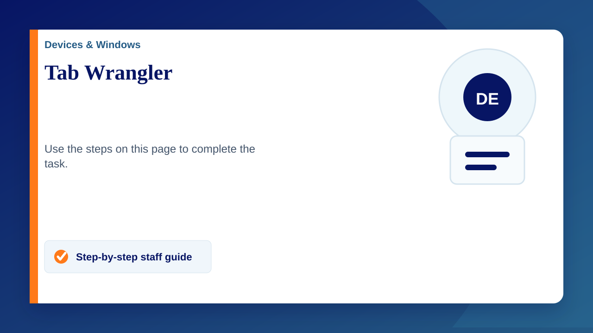

Too many open tabs can slow down your computer and make it tricky to find what you need. The Tab Wrangler Chrome extension is a handy tool that automatically closes unused tabs, helping keep your browser tidy and efficient.
How Tab Wrangler Helps:
- Automatic Tab Closing - Closes inactive tabs after a set time, reducing clutter.
- Easy Tab Recovery - Maintains a list of closed tabs, so you can easily reopen them if needed.
You can download Tab Wrangler directly from the Chrome Web Store here: Tab Wrangler Chrome Extension .
Using Tab Wrangler can boost your computer’s performance and help you stay organised.